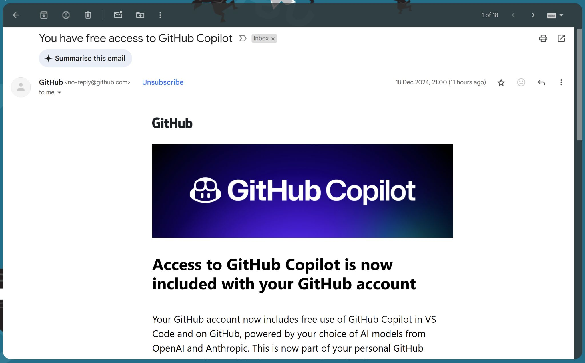

🎉 עצרו הכל - GitHub Copilot – עכשיו בחינם לכולם! 🚀
פורסם במקור ב LinkedIn
🎉 עצרו הכל - GitHub Copilot – עכשיו בחינם לכולם! 🚀
למי שלא מכיר, מדובר בעוזר קוד מבוסס AI שמספק השלמות קוד חכמות, עוזר להבין קוד קיים, לבצע רפקטורינג, ואפילו לפתור באגים. הוא היה הראשון לצאת ועשה מהפכה בעולם התכנות בדומה למה ש-Chat GPT עשה לשאר העולם.
ועכשיו הם הפכו אותו להיות חלק מחשבון ה-GitHub האישי שלכם – ללא עלות!
מה כלול בגרסה החינמית?
✔️ 2,000 השלמות חכמות בחודש – קבלו הצעות קוד שמתאימות להקשר מהפרויקטים שלכם.
✔️ 50 הודעות Copilot Chat בחודש – שאלות על קוד, דיבוג, או שיפורים.
✔️ בחירה בין מודלים – GPT-4 או Claude 3.5 Sonnet.
✔️ Copilot Edits – עריכות מרובות קבצים בו זמנית.
✔️ תוספים נוספים – גישה לסוכנים כמו שאילתות Stack Overflow או חיפושים באינטרנט.
✔️ ללא תלות באחסון הקוד ב-GitHub – ניתן להשתמש ב-Copilot גם אם הקוד שלכם מאוחסן מקומית או במערכות אחרות.
כל מה שאתם צריכים זה חשבון GitHub! Copilot זמין לשימוש ב-VS Code וב-GitHub
👉 קישור להתקנת GitHub Copilot
https://github.com/copilot
#AI #GitHubCopilot #תכנות
